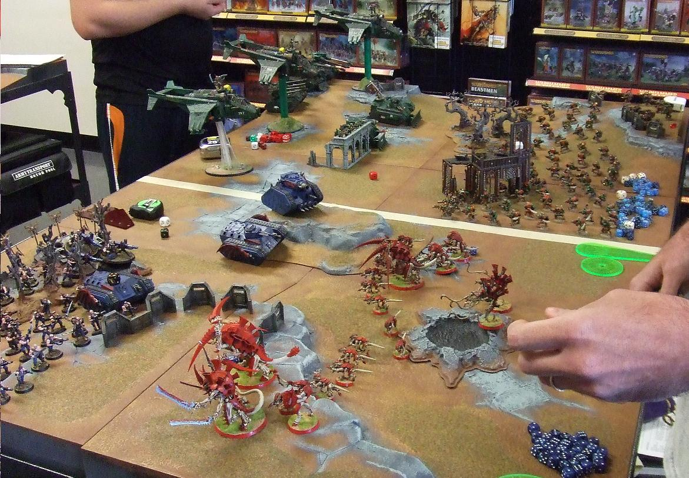

Warhammer 40k is a tabletop wargame set in the grim-dark sci-fi setting created by Games Workshop. The setting features many different factions ranging from humaity and its "allies". you can either against chaotic forces or entine alien species, or join them and .
Why Do I like it?

There are many different reasons I like the tabletop game and the setting as a whole, here are some reasons
1. I like all the wide variety of models from army to army, and even from different people that have the same army, but painted slightly different in their own way.
2. You have complete freedom to make your army however you want with whatever you want, but competetive settings can be a bit strict about things such as what a model has on it.
3. The game has introduced me to so many nice people that I otherwise would've never met if I never got into the hobby